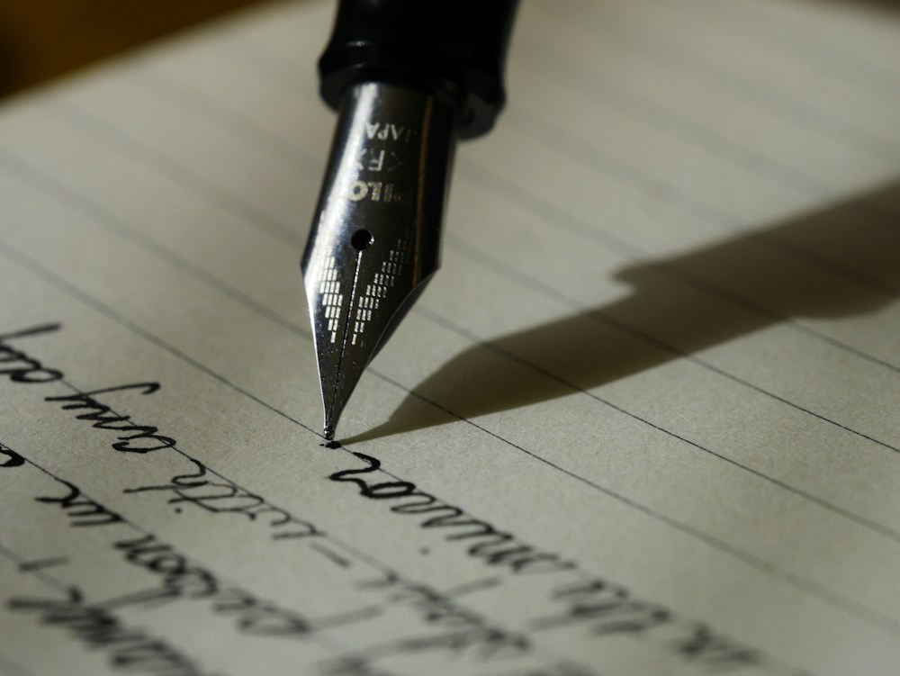

17 años
Tijuana, Baja California, México
De los primeros dibujos a nuevas ideas

Mi historia en la escuela está acompañada por libros, dibujos y proyectos visuales. Las actividades creativas me han ayudado a expresar mis ideas y a conocer mejor mis intereses.
Kínder
Jardín de Niños Pequeños Horizontes
Disfrutaba los cuentos, las pinturas y las actividades para crear figuras con papel.
Primaria
Primaria Senderos de Tijuana
Me gustaban la lectura en voz alta, los concursos de dibujo y los trabajos sobre mi comunidad.
Secundaria
Secundaria General Vista del Pacífico
Empecé a interesarme por la fotografía y a cuidar más la presentación visual de mis proyectos.
Preparatoria
Bachillerato Cultural Nueva Etapa
Busco mejorar mi expresión escrita, mis habilidades digitales y la forma de presentar ideas.
Mi proceso para aprender
Cuando leo un texto subrayo una idea que me llama la atención y después intento explicarla con mis propias palabras. También hago bocetos en los márgenes de mis apuntes. Dibujar un concepto me ayuda a encontrar relaciones que no había visto al principio.
Para un trabajo visual empiezo reuniendo referencias y probando varias composiciones en papel. Comparo tamaños, colores y espacios antes de elegir una versión. Me interesa que una presentación se entienda con facilidad y conserve algo de mi manera de ver las cosas.
En qué me gustaría mejorar
Quiero escribir textos más claros, practicar el dibujo de espacios y aprender a seleccionar mis mejores fotografías. También busco sentirme más seguro cuando explico frente a otras personas por qué elegí una imagen, un color o una idea.